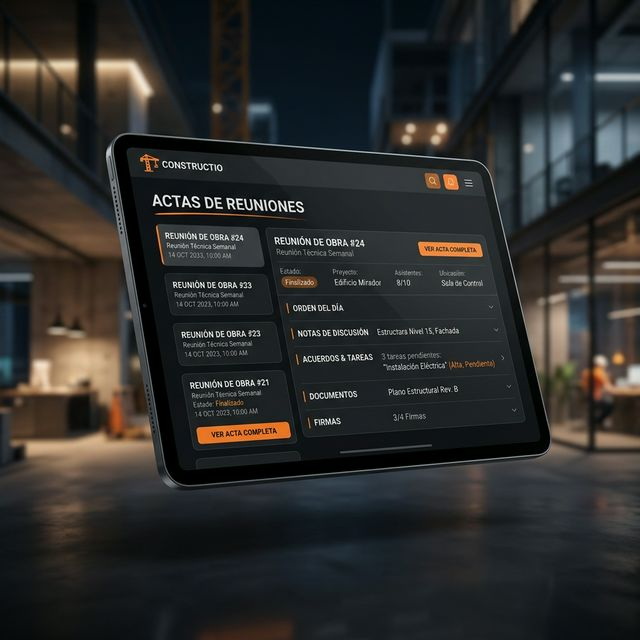
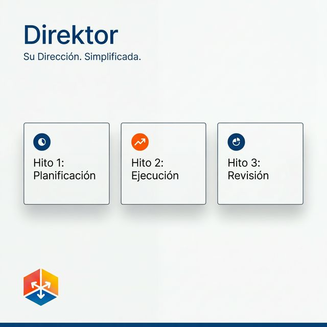
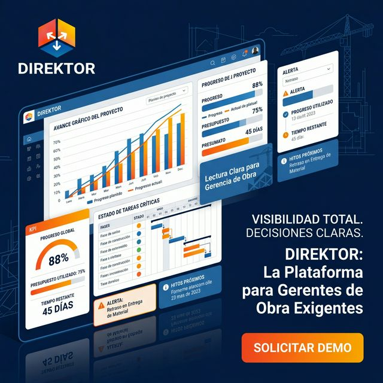

Módulos Core
Todo lo que tu equipo necesita para ejecutar la obra a la perfección.
Análisis de Restricciones
Identifica y libera obstáculos antes de que afecten el avance de tu obra. El análisis de restricciones te permite asignar responsables, prioridades y fechas límite directamente en la palma de tu mano.
- ✅ Filtros avanzados por frente y fase
- ✅ Priorización automática por semáforos
- ✅ Gestión de flujo colaborativo
Actas de Reuniones
Crea actas de reuniones 100% digitales. Registra acuerdos, responsables, asistencia, firmas electrónicas y toma fotos directamente en el campo. Genera PDFs con valor legal de manera instantánea.
- ✅ Acuerdos organizados por disciplina
- ✅ Firmas electrónicas in-situ
- ✅ Alertas automáticas de acuerdos vencidos

Seguimiento de Acuerdos
Vista operativa y ejecutiva de todos tus compromisos pendientes, por vencer y vencidos. Controla responsabilidades cruzadas con fechas inmodificables.
- ✅ Tablero visual de responsabilidades
- ✅ Fechas de compromiso claras
- ✅ Trazabilidad absoluta

Control de Hitos
Detección anticipada de eventos críticos. Monitorea fechas contractuales en riesgo o en cumplimiento para proteger el avance real frente al planeado.
- ✅ Hitos contractuales vs reales
- ✅ Semaforización de riesgos
- ✅ Alertas de desviación

Avance Gráfico
Lectura inmediata y directa del estado de salud del proyecto. Comunica visualmente el progreso a la gerencia y directivos sin procesar pesados archivos de Excel.
- ✅ Mapeo visual 2D/3D (Integrable)
- ✅ Indicadores clave de rendimiento
- ✅ Reportes ejecutivos directos
